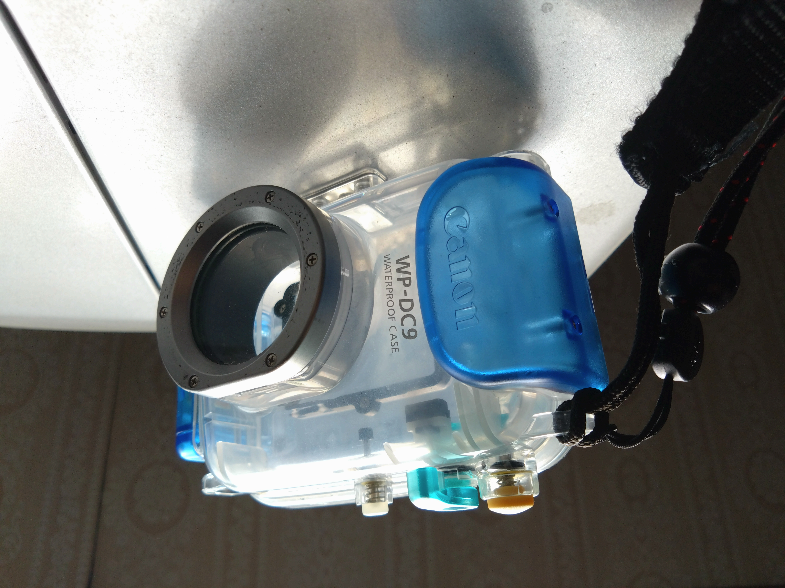
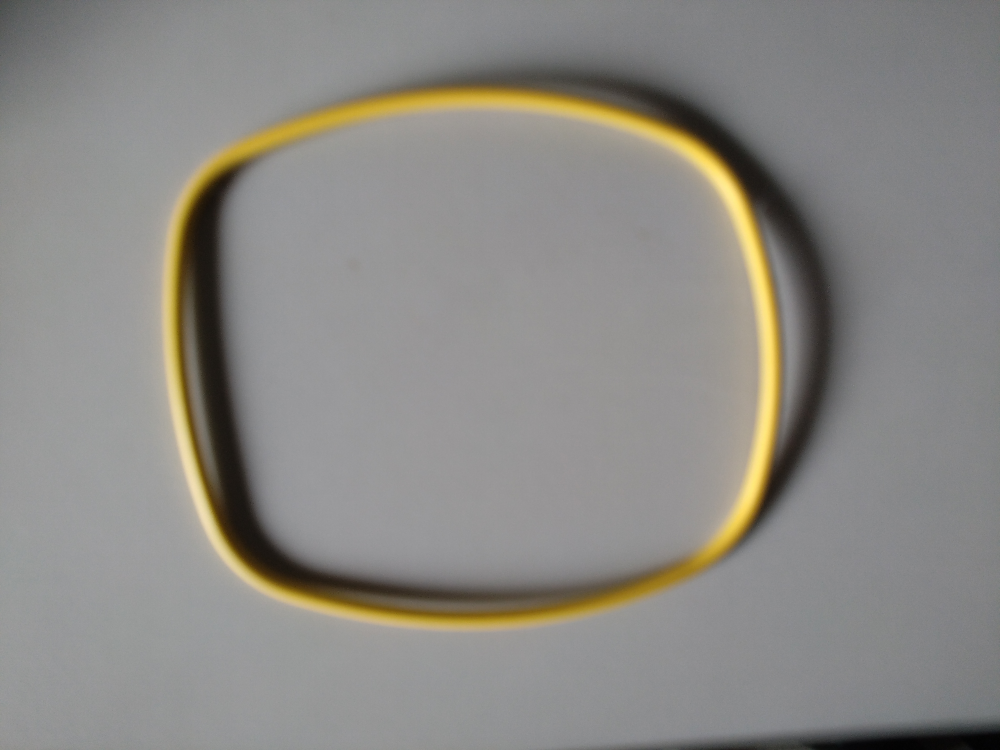

🏯 妄想博士の研究所
＞
📸 防水ハウジング研究
📸 防水ハウジング研究
ようこそ、防水ハウジング研究室へ！
この研究室では、
キヤノン IXE DIGITAL 900IS用防水ハウジングの
復活プロジェクトを載せていくぞょ！
━━━━━━━━━━━━━━━━━━
２０２６年春
衣替えの為に押し入れから夏服を引っ張り出していると、何か入った袋を見つけた。
「なんじゃ？！何が入っておるんじゃ？！」と袋を開けてみると、懐かしい物が出てきた。

キャノンIXY DIGITAL 900IS用防水ハウジング【WP-DC9】‼️
実はワシはこう見えてスキューバダイビングの「ダイブマスター」ホルダーなのじゃ！
２００２年に取得したので、かれこれ２０年以上前の話じゃ。
当時は、今のようにスマホが無いころで、フイルムカメラからデジタルカメラに市場が移りつつある頃じゃ
「懐かしいのぅ…」と昔を思い出しながら、ふと「まだ使えるのか？！」とワシの心が躍り始めた。
外見にダメージは見受けられないが、防水ハウジングの命は読んで字のごとく「防水性能」じゃ。
ハウジングの防水性脳の要、Ｏリングを慎重に取り外してみた。

目立った傷や、ひび割れはとりあえず無い。

更に幸いなことにシリコングリースまで残っていた。
指先にほんの少しグリースをとり、Ｏリングに丁寧に塗っていく。
塗り終わったら、数日放置し、
１．予算は一万円前後
２．上半身を冷却するため、半袖
３．連続使用時間は６時間以上
４．色はグレーかネイビー
この条件で探してみると、だいぶ絞れてきた。
この業界にも有名企業があるらしく、そちらは数万する。
空調服初心者のワシには博打のような価格である。
そこで、手ごろな価格のものをポチッたのじゃ！
そして数日後………
予想に反して、小さな小箱に入ってそれはやってきた！
一辺が３０cmもしないそれを見た時、一瞬、注文を間違えたかと思うほどコンパクトな梱包。

とりあえず開封してみる。

開封してみたのがこちら。
安心した。ウェアとファン関係はセットになっていた。
・ウェア、ファン、バッテリー、配線ケーブル、全部そろっているようじゃ！
ウェアを広げて、ファンを取り付けてみた。ファンはストッパーで脱着するので、取り外しが楽じゃ！

説明書通り、まずはバッテリーを満充電にし、電源端子に接続！！
小一時間で、満充電は完了。
そして、スイッチを入れると・・・
メチャメチャ涼しいではないか！
首から袖から風が抜けていく！！
最小風力でも十分涼しい。
最大風力では思わず笑ってしまうほど快適じゃった！
５段階に風力調節でき、音も許容範囲！
これで、この夏、炎天下の草刈りもはかどるじゃろう！
追記（研究結果）
後日、自宅で扇風機を止めて空調ウェアだけで過ごしてみた。
最弱風量でも首元から袖口まで風が流れ、十分涼しかった。
屋外だけでなく、室内でのパソコン作業にも活躍しそうじゃ。
📝 追記（研究結果 その2）
室温30℃、扇風機を止めた状態でも試してみた。
最弱風量でも十分涼しく、「全然平気じゃ！」という結果になった。
この夏のパソコン作業や写真整理の強い味方になりそうじゃ。
最後に一言
空調ウェアを初めて着た感想を一言で表すなら、
「前後左右から扇風機にあたっているみたいじゃった‼️
ムホホホ！！
🧪 研究結果
📅 研究日：2026年8月3日
👕 装備：ファン式空調服
⭐ 評価更新
★★★★★ → ★★★★★（変わらず）
これは買って正解じゃった！
📂 研究No.0003
この記事が誰かの参考になれば嬉しいのぅ。
🏯 妄想博士
ワシの研究はまだ終わらん！
🏠 妄想博士の研究所へ戻る